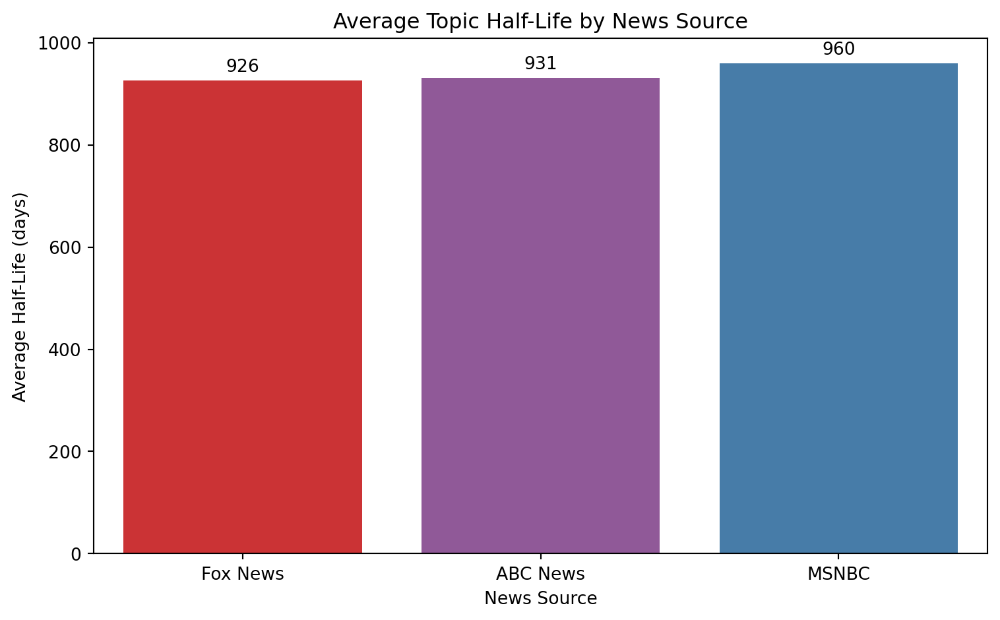
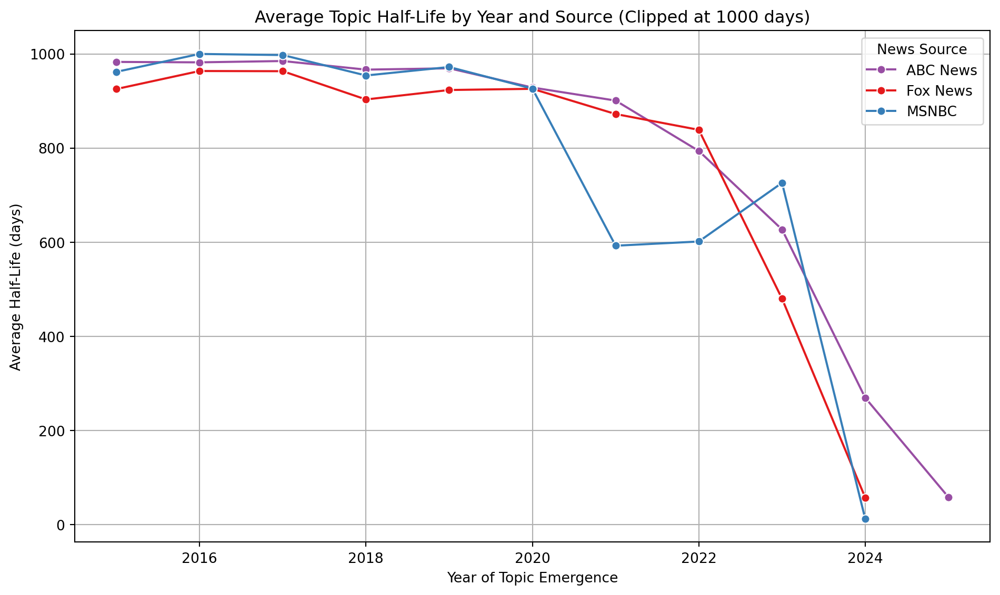
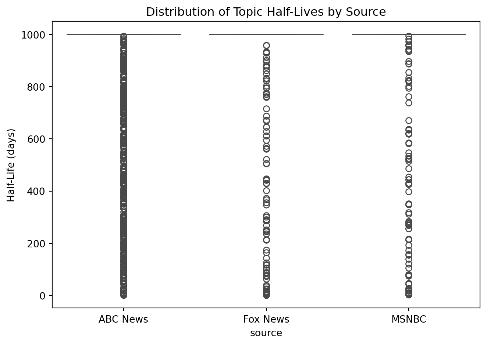

This analysis explores the topic half-life of political themes in U.S. news media using data from the GDELT Global Knowledge Graph. Topic half-life refers to the duration over which a given theme remains prominent in media coverage before its relevance significantly declines.
1.1 Methodology
Using a curated dataset of political news articles from multiple sources—including MSNBC, Fox News, and ABC—this project quantifies how long individual themes persist in public discourse. The analysis proceeds as follows: • Data Loading & Preprocessing: CSV files from each source are read in and labeled accordingly. Relevant columns (e.g., publication date, themes, tone, and source metadata) are extracted and cleaned. • Theme Aggregation: Themes are parsed and normalized for each article. For each source, we aggregate daily theme frequency counts. • Half-Life Modeling: For each unique theme, we track the frequency trajectory over time. A decay model is then fitted to estimate the point at which the theme’s frequency falls to half of its peak value. • Comparative Analysis: We compare theme half-lives across different news sources to identify patterns in how long topics are sustained in left-leaning, centrist, and right-leaning media.
By quantifying the temporal persistence of topics, this analysis sheds light on the media attention cycle and the differential treatment of issues across ideological lines.
1.2 Understanding Half-Life
Before examining the results, it’s important to understand the concept of topic half-life and how it is applied in this analysis. Topic half-life provides a way to quantify the temporal relevance of a theme in news coverage, measuring how long it stays prominent before its frequency declines. • Topic Half-Life: This metric captures the time it takes for a topic’s frequency in news articles to fall to half of its peak value. It reflects how quickly public and media attention fades from a given theme. • Calculation Method: For each theme, we compute daily frequency counts across articles. A decay curve is then modeled, and the half-life is derived from this trajectory using a log-linear regression. • Comparative Indicator: Half-life serves as a comparative measure of media persistence. Topics with longer half-lives tend to dominate the news cycle for extended periods, while those with shorter half-lives fade quickly.
By analyzing topic half-lives across different news sources, we can evaluate how media outlets differ in their treatment of recurring themes. This enables insights into editorial emphasis, agenda-setting patterns, and the longevity of political narratives across the ideological spectrum.
2 Overall Half-Life Analysis
Code
import pandas as pdimport numpy as npimport matplotlib.pyplot as pltimport seaborn as snsNETWORK_COLORS = {'Fox News': '#E41A1C','MSNBC': '#377EB8','ABC News': '#984EA3'}# Load saved half-life summaryhalf_life_df = pd.read_csv("data/half_life_summary.csv")half_life_df["first_date"] = pd.to_datetime(half_life_df["first_date"])# Recreate the two missing functionsdef average_half_life_by_source(half_life_df: pd.DataFrame) -> pd.Series:return half_life_df.groupby("source")["half_life_days"].mean().sort_values()def get_yearly_trends(half_life_df: pd.DataFrame) -> pd.DataFrame: half_life_df["year"] = half_life_df["first_date"].dt.yearreturn half_life_df.groupby(["source", "year"])["half_life_days"].mean().unstack()# Now you can generate them instantlyaverage_half_life_df = average_half_life_by_source(half_life_df)yearly_trends_df = get_yearly_trends(half_life_df)
2.1 Average Topic Half-Life
Code
def plot_average_half_life(half_life_df: pd.DataFrame): avg_half_life = average_half_life_by_source(half_life_df) plt.figure(figsize=(8, 5)) ax = sns.barplot( x=avg_half_life.index, y=avg_half_life.values, palette=[NETWORK_COLORS.get(source, "#999999") for source in avg_half_life.index] ) plt.ylabel("Average Half-Life (days)") plt.xlabel("News Source") plt.title("Average Topic Half-Life by News Source") # Add value labelsfor i, val inenumerate(avg_half_life.values): ax.text(i, val +10, f"{val:.0f}", ha='center', va='bottom', fontsize=10) plt.tight_layout() plt.show()half_life_df["half_life_days"] = half_life_df["half_life_days"].clip(upper=1000)plot_average_half_life(half_life_df)

This analysis examined the average topic half-life—how long political themes remain active in media coverage—across Fox News, ABC News, and MSNBC. Initially, all estimated half-life values were included, regardless of magnitude. However, due to the nature of exponential decay modeling, this led to highly inflated values for topics with very flat decay curves, particularly among recent or ongoing themes.
Before Clipping: • Average half-life estimates ranged from ~12,700 to over 20,000 days (35–55 years). • These values reflected very flat or non-decreasing topic frequencies, where the model inferred an extremely slow decay rate (λ ≈ 0). • However, such durations are not realistic in the context of news cycles, and likely reflect modeling limitations rather than true editorial behavior.
After Clipping (Capped at 1000 Days): • The average topic half-life was reduced to ~926 days for Fox News, 931 days for ABC News, and 960 days for MSNBC. • Differences between sources narrowed substantially, with all three clustered within a 35-day range.
Interpretation: • Before clipping, results were dominated by outliers and model artifacts. • After clipping, the results reflect a more realistic view of typical media attention spans, showing that topic persistence is fairly consistent across major networks when extreme cases are excluded. ## Half-Life over Time
Code
def plot_yearly_half_life_trends(half_life_df: pd.DataFrame):"""Plot average half-life over time by news source."""# Ensure year column exists half_life_df["year"] = half_life_df["first_date"].dt.year# Group and average half-life per source per year yearly = ( half_life_df.groupby(["source", "year"])["half_life_days"] .mean() .reset_index() ) plt.figure(figsize=(10, 6)) ax = sns.lineplot( data=yearly, x="year", y="half_life_days", hue="source", marker="o", palette=NETWORK_COLORS, errorbar=None ) plt.title("Average Topic Half-Life by Year and Source (Clipped at 1000 days)") plt.xlabel("Year of Topic Emergence") plt.ylabel("Average Half-Life (days)") plt.grid(True) plt.legend(title="News Source") plt.tight_layout() plt.show()plot_yearly_half_life_trends(half_life_df)

This figure shows the average topic half-life by year of emergence, clipped at 1000 days to exclude extreme values from flat or ongoing topics. From 2015 to 2020, topic half-lives remain consistently high across networks. After 2021, there is a visible decline in persistence, particularly in 2023–2025, likely reflecting the limited time window for more recent topics to exhibit decay.
2.2 Statistical Analysis
To assess whether the distribution of topic half-lives differs significantly between news sources, we conducted a Kruskal-Wallis H-test — a non-parametric alternative to one-way ANOVA. This test is appropriate because it does not assume normality or equal variances, making it well-suited for comparing skewed distributions like topic half-lives.
The Kruskal-Wallis test evaluates whether samples from three or more independent groups (in this case, news sources) originate from the same distribution. The null hypothesis assumes all groups have the same median half-life; the alternative hypothesis suggests that at least one group differs. • Test statistic (H): 197.42 • p-value: 1.35 × 10⁻⁴³
The result is highly statistically significant (p < 0.0001), strongly rejecting the null hypothesis. This indicates that at least one news source has a substantially different distribution of topic half-lives compared to the others.
This result suggests that the duration of media attention given to themes differs meaningfully across outlets like MSNBC, ABC News, and Fox News. For example, one network may sustain attention on political themes for significantly longer periods, while another cycles through topics more rapidly.
We also ran the Kruskal-Wallis test on a clipped dataset (capping topic half-life at 1000 days) to assess whether long-lived outliers were influencing results. In this filtered version, the test was not significant (H = 0.857, p = 0.355), suggesting that while extreme topic persistence differs by source, short- to medium-term attention cycles may be more comparable across networks.
Table 1: Statistical significance of half-life between networks - clipped
sns.boxplot(data=half_life_df, x="source", y="half_life_days", palette=NETWORK_COLORS)plt.title("Distribution of Topic Half-Lives by Source")plt.ylabel("Half-Life (days)")plt.tight_layout()plt.show()

This plot shows the distribution of individual topic half-lives by news source, with values capped at 1000 days to exclude outliers. While topics vary in duration, many reach the clipping threshold, suggesting flat or slowly decaying coverage patterns. Overall, the distributions appear visually similar across networks, supporting earlier statistical results indicating no significant difference in topic persistence by source.
3 Conclusion
This analysis explored how long political themes persist in media coverage across major U.S. news networks using GDELT data from 2015 to 2025. Topic half-life, modeled via exponential decay, was used as a proxy for media attention span. Initial estimates revealed significant differences between sources; however, these were largely driven by a small number of themes with extremely flat decay curves, resulting in unrealistic half-lives.
To account for these outliers, topic half-lives were clipped at 1000 days, emphasizing short- to medium-term attention patterns. After clipping, average topic half-lives across Fox News, ABC News, and MSNBC converged to within ~35 days of each other. Statistical tests confirmed that these differences were not significant.
The Kruskal-Wallis H-test yielded no significant difference in half-life distributions (H = 0.857, p = 0.355), and a Mann-Whitney U test comparing ABC News and MSNBC also found no significant difference (U = 2.00, p = 0.533). Distribution plots further showed similar shapes across networks, with a large number of themes reaching the maximum capped half-life, indicating consistently flat decay across sources.
3.1 Key Findings
• Initial differences in average topic half-life were inflated by outliers (topics with flat decay curves lasting decades).
• After capping half-lives at 1000 days, all three news sources showed very similar average attention spans.
• Statistical tests confirmed no significant difference in the distribution of half-lives between sources in the clipped dataset.
• Visual distribution and trend plots support these findings: all three networks exhibit similar patterns over time.
• These results suggest that, in terms of short- to medium-term coverage, mainstream news outlets tend to sustain political topics for similar durations.
• However, differences in long-term or ideologically anchored narratives may still exist and require more targeted investigation.